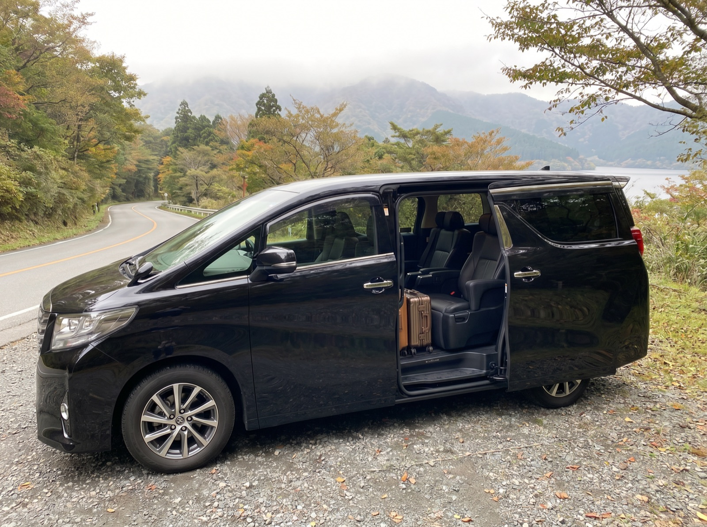
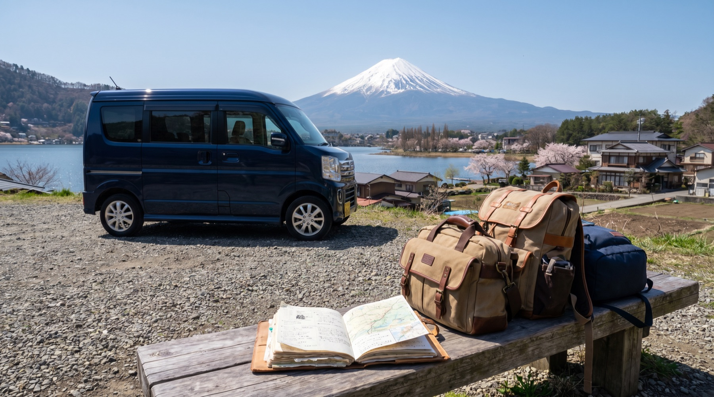
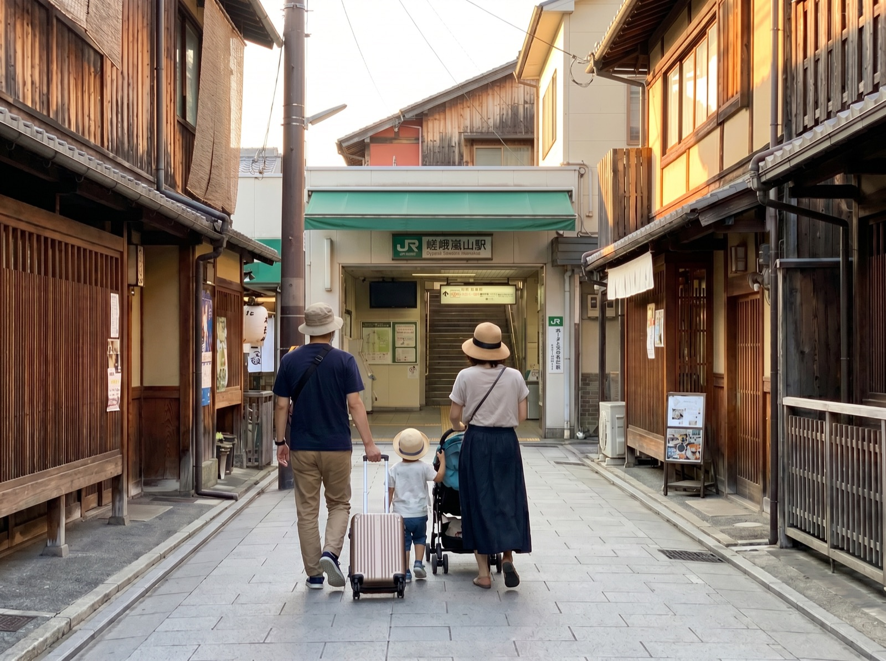

How It Works
相談から出発まで、5ステップで進めます。
01
要件確認
人数、日程、予算、言語、体力、宿泊レベル、必須地点を確認。
02
旅程案
都市、交通、立ち寄り順、予約難易度を整理。
03
見積と範囲
企画、車両、宿泊、予約支援、通訳範囲を分けて提示。
04
手配確認
適切なサービス形態で、宿泊、車両、施設、飲食店を確認。
05
旅行サポート
旅程表、注意事項、多言語メモ、緊急連絡ルールを共有。
旅行ガイド
旅程を決める前に、確認すべきポイントを整理します。
貸切車、家族旅行、温泉旅館、シニア同行、観光施設と飲食店予約など、訪日旅行で迷いやすい判断を実用的にまとめています。
Service Packages
状況に合わせて選べる3つの相談入口を用意しました。
すべてを自由記述で相談させるのではなく、旅行者が自分の状況に近いサービスを選べる構成にしています。
旅程設計パッケージ
航空券や宿泊を自分で手配する旅行者向け。日別ルート、移動、予約優先度、雨天代替案を整理します。
- 日別ルート構成
- 交通と歩行量の確認
- 予約優先リスト
貸切車 + 宿泊支援
富士山、箱根、伊豆、京都郊外、シニア同行、荷物が多い家族旅行などに向いています。
- 車両と荷物量の確認
- ホテル・旅館候補の整理
- ドライバー向け連絡メモ
フル旅行コンシェルジュ
高付加価値の家族旅行、企業ゲスト、多都市周遊など、企画から予約、当日連絡まで必要な旅行向けです。
- 旅程と予約支援
- 観光施設・飲食店の時間調整
- 旅行前後の連絡ルール設計
Sample Trips
サービス内容を想像しやすいモデル旅程。
固定ツアーではありません。実際に相談されやすい旅行課題を、実行可能な行程として見せるための例です。

東京 + 富士山貸切車 5日
東京滞在、河口湖日帰り、昼食、写真スポット、荷物、雨天代替案まで整理。

大阪 + 京都 家族旅行 6日
テーマパーク、子連れ向け宿泊、少ない乗換、ベビーカー動線、飲食店候補を調整。
箱根・伊豆 温泉旅館 4日
部屋タイプ、夕食、貸切風呂、送迎、観光順序、帰路交通まで確認。
Content Assets Needed
実写真を入れると、信頼感が大きく上がります。
現時点では既存の旅行画像を仮素材として使っています。正式公開前に、オリジナルまたは利用許諾済みの写真へ差し替えるのが理想です。
Trust
実際の顧客評価を掲載する枠を用意しています。
口コミは作りません。許諾済みのチャット、文章、写真、旅行後レビューを追加してください。
実績レビュー枠 01家族旅行の貸切車フィードバック
実績レビュー枠 02旅館予約と宿泊フィードバック
実績レビュー枠 03シニア同行旅行のフィードバック
Start Planning
旅行内容をお送りください。
送信後、旅行日程、人数、予算、必要なサポート、補足内容を管理画面の問い合わせ一覧で確認できます。
- 家族旅行、シニア同行、高付加価値旅行、企業接待向け
- 貸切車、宿泊、予約、多言語コミュニケーションに対応
- 単体の低価格チケット購入のみの用途には不向き